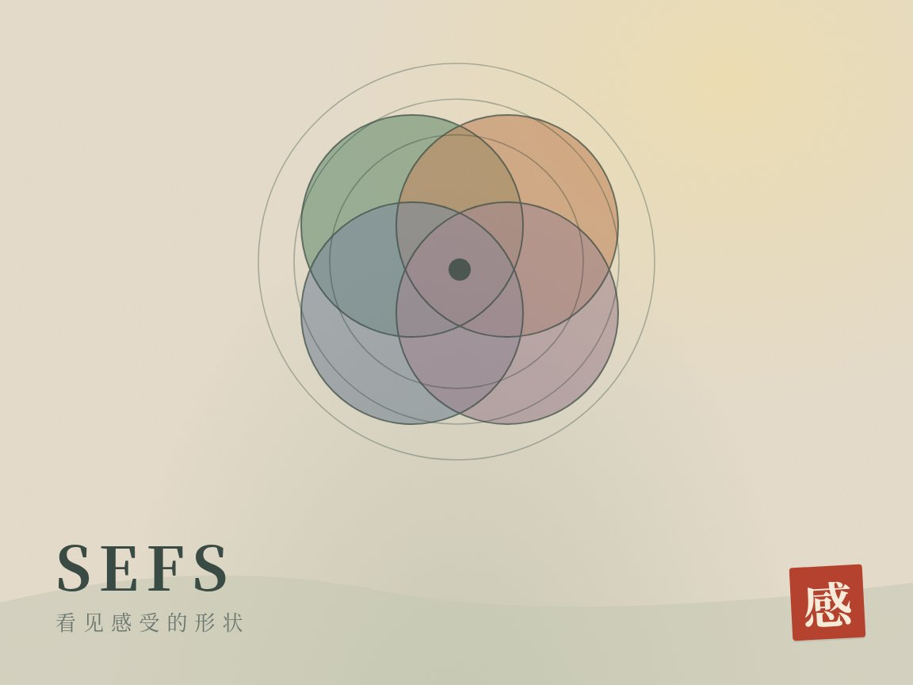
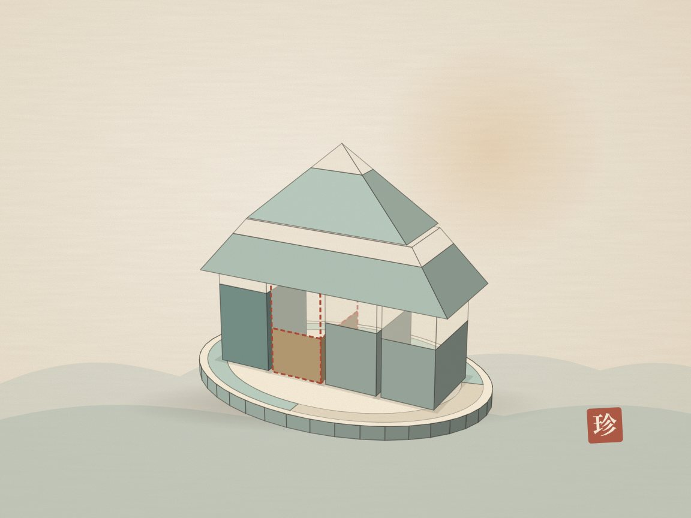
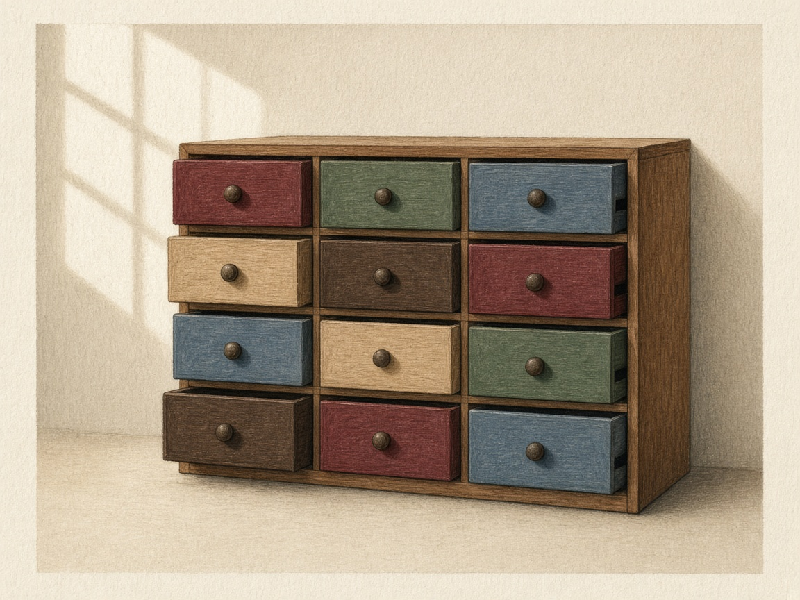
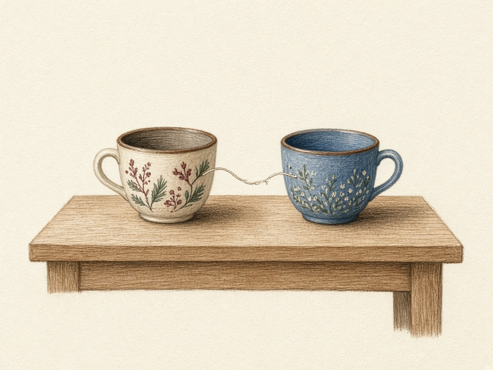
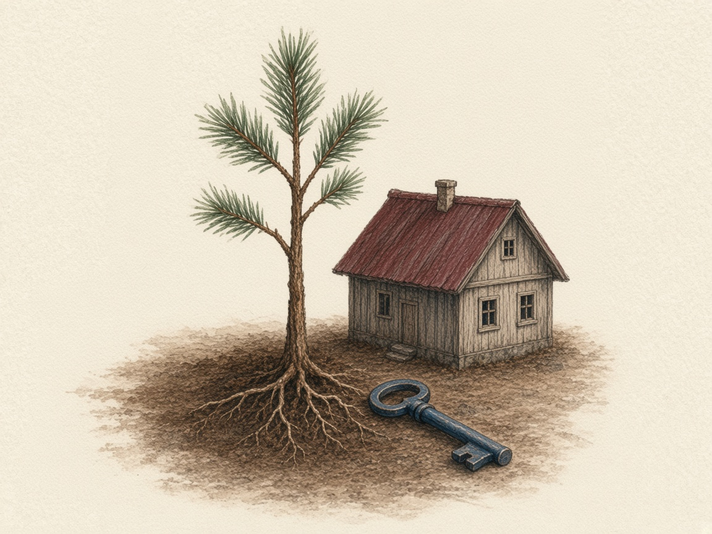
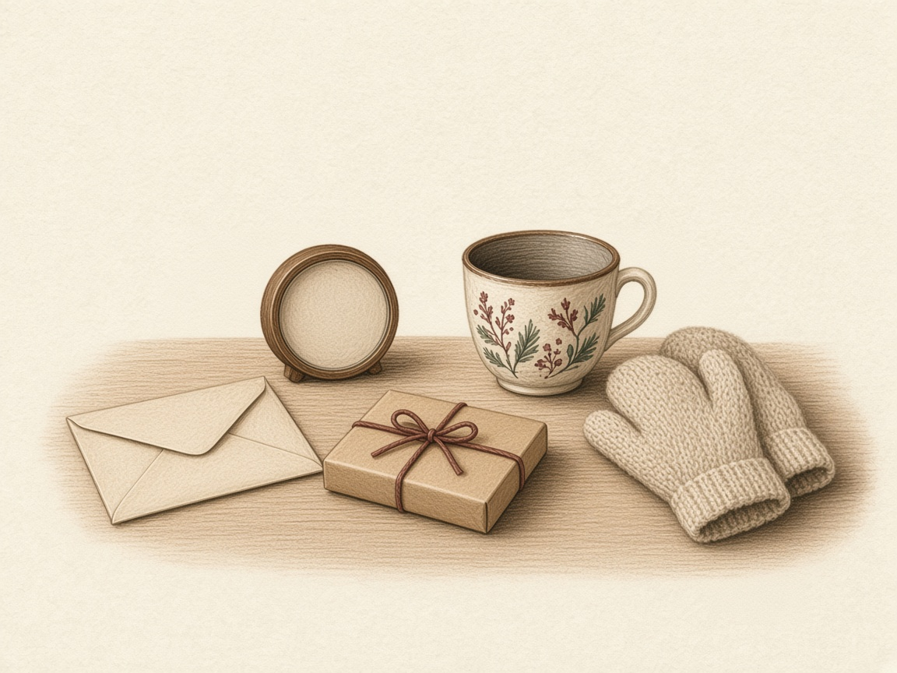
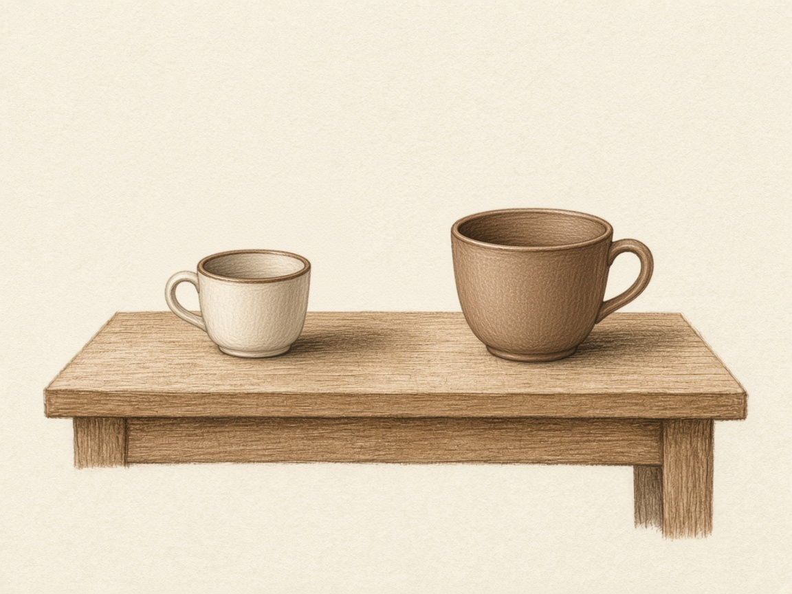
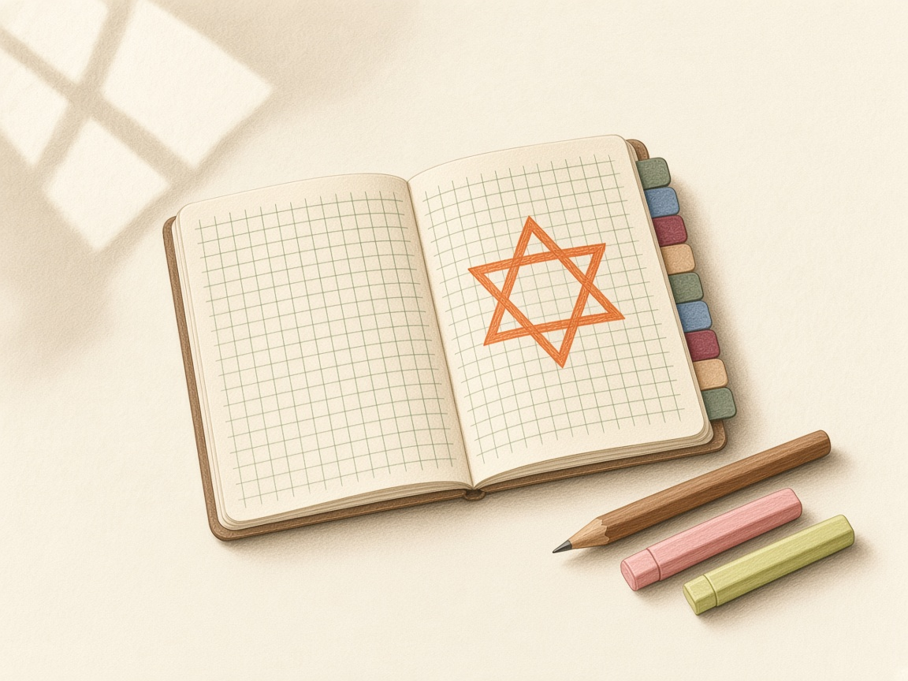

ASVA 常用心理测试
认识自己，成为自己，绽放生命！
-

SEFS · 主观体验功能状态量表 看看你现在的感受是太淡还是太满。24 道题，不是诊断。 -
 个人充电
看看你的电量被什么耗掉了，再给你一个 3 分钟的小修复。
个人充电
看看你的电量被什么耗掉了，再给你一个 3 分钟的小修复。
-
 高敏感心力地图
看看是什么在消耗你，又有什么能撑住你。约 8–10 分钟，不是诊断。
高敏感心力地图
看看是什么在消耗你，又有什么能撑住你。约 8–10 分钟，不是诊断。
-

珍爱金字塔 看看你和自己的关系，哪一层最缺能量。36 题，不是诊断。 - SCL-90 症状自评量表 看看你最近一周的感受，身体、情绪、人际等 10 个方面各有个分。不是诊断。
-

人格障碍筛查 PDQ-4 按过去几年的你来答，看 12 种性格模式有没有偏得明显。是筛查，不是诊断。 -

成人依恋关系测评 看你谈恋爱时是怕被丢下，还是怕靠太近，再归到四种相处类型之一。 -

寻根之旅 · 原生家庭考古 回头看看原生家庭，理解自己为什么会成为今天的样子。 - 情绪健康测试 六套小测试：情绪、愤怒、恐惧、戏剧化、内疚、悲痛，卡住时挑一套做。
-

爱的 5 种语言 每题选更让你觉得被爱的一句，看你最需要哪种表达爱的方式。 -

巨婴测评 给 20 个表现打分，看你像不像讲座里说的「巨婴」。不是诊断。 -

职业六芒星 31 个词划三轮，留下最重要的 3 个，再挑回 3 个现实追求。 -
 霍兰德兴趣探索
从你自然喜欢的事情里，看看自己更习惯用哪种方式和世界打交道。
霍兰德兴趣探索
从你自然喜欢的事情里，看看自己更习惯用哪种方式和世界打交道。
作答留在这台设备上。结果用于自我了解，不是诊断。